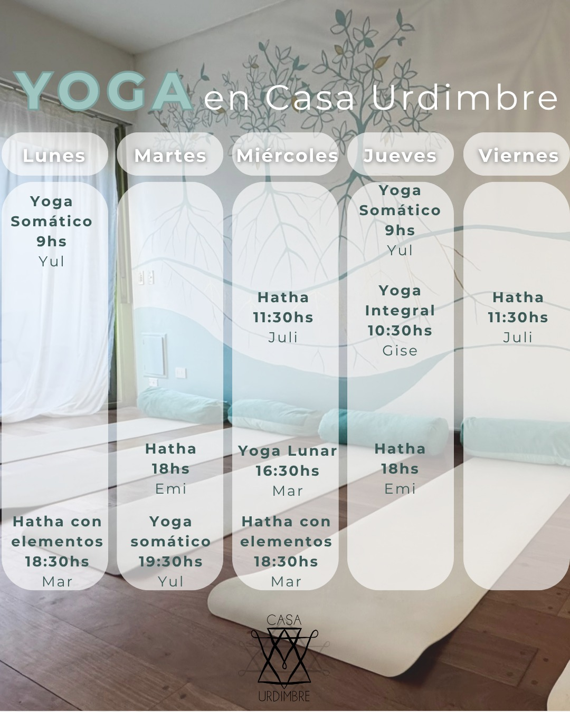

Yoga y Movimiento
Cronograma de clases
Mirá el cronograma de clases y reservá tu lugar
Inscribite a las clases haciendo click acá
¿Qué estilos de yoga podés encontrar en Casa Urdimbre?
Yoga Somático
Brindado por Yul Bach
Una práctica progresiva que combina exploración somática con posturas y secuencias de Yoga. Abrir el cuerpo desde la suavidad y la escucha sentida, para luego ir desplegando sus fuerzas profundas en secuencias dinámicas, siempre respetando los límites propios, en un diálogo abierto entre cuerpo y conciencia.
A través de la práctica de la atención en el movimiento, en las sensaciones y en los tejidos, la clase invita a liberar tensiones, mejorar la movilidad y cultivar una relación integrada entre cuerpo y mente.
Cada encuentro propone ampliar el espacio interno, habitando la paciencia y la presencia en los procesos corporales. Movernos hacia el equilibrio entre fuerza y flexibilidad desde la escucha interna puede ayudarnos a regular nuestro sistema nervioso y desplegar nuevas formas de relacionarnos con el cuerpo y el mundo entre la conexión y la vitalidad.
Hatha Yoga
Brindado por Emi Reinhold
La práctica es predominantemente suave, combinando āsana (posturas) y prānāyāma (respiraciones), subiendo la intensidad en algunos momentos para investigar la potencia del propio cuerpo e ir expandiendo de a poco los límites y con ello, habilitarnos a percibir lo que “va siendo” como forma de autoconocimiento desde lo grueso (cuerpo físico) a lo cada vez más sutil (cuerpo mental, emocional, espiritual).
Ir al encuentro de nuestro ser íntegro y puro desde un lugar seguro, paciente y amable, “limpiando” lo que ya no, tomando lo que sí, y dejando que poco a poco el cuerpo físico se vaya desbloqueando y regulando, y la mente aquietando.
Es apta para todxs, acompañándonos desde lo grupal, y respetando lo individual.
“El proceso empieza con el cuerpo, en el Aquí y Ahora. La clave de la libertad es estar totalmente presente en el cuerpo.” (Augusto Fernandes)
Hatha Yoga
Brindado por Juli Guerra
El Hatha Yoga es una práctica que combina posturas físicas (asanas), respiración consciente y momentos de relajación, en un ritmo pausado y accesible. Está dirigido a todas las personas, sin importar la edad o la experiencia, y es ideal para quienes se acercan por primera vez al yoga. En cada clase trabajamos la fuerza, la flexibilidad y la postura, mientras cultivamos la calma mental, la conexión con el propio cuerpo y la respiración.
Yoga Lunar
Brindado por Mar Badran
En estas clases nos dejamos guiar por la energía de la luna. Como muches sabemos, el cuerpo está compuesto en gran parte por agua, y así como la luna influye en las mareas, también lo hace en nuestras aguas internas.
La energía disponible no es la misma en luna llena, cuando todo está iluminado, que en luna nueva, cuando todo se vuelve oscuridad.
Estas prácticas son una invitación a soltar la programación lineal y entregarse al fluir de los ciclos lunares, permitiéndote habitar con mayor presencia tus propios ritmos internos.
Yoga Integral
Brindado por Mar Badran
Mis clases son una invitación a entrar en contacto con el cuerpo y con el momento presente, desde la curiosidad y la escucha activa. A través de la práctica de āsanas y prānāyamas, exploramos distintos aspectos del ser —físicos, energéticos y espirituales— en un camino de autoconocimiento y soberanía.
Todo lo que hacemos se adapta a los tiempos y singularidades de cada unx, creando un espacio accesible y cuidado. Percibo la práctica de yoga como un espacio de encuentro y diálogo con unx mismx, donde, a través de las sensaciones —tensión y distensión, rigidez y blandura—, el cuerpo/soma se comunica con nosotrxs, revelándonos información valiosa y una comprensión más profunda de nuestro estado de salud integral.
En este proceso, aprendemos a reconocer nuestros propios límites y a movernos con ellos, generando mayor libertad y sabiduría en la vida cotidiana. Recuperar la confianza en el cuerpo y en el propio proceso también es parte de la práctica: un camino que puede vivirse con cuidado, compasión y presencia.
Yoga Integral
Brindado por Gise Bujones
En mis clases de yoga, combinamos la práctica tradicional del yoga con técnicas de conciencia corporal para crear una experiencia única y holística. A través de movimientos fluidos exploramos la conexión entre el cuerpo, la mente y el espíritu.
En la práctica regular buscamos integrar la conciencia del "saludo al sol" y también profundizar no solo en posturas puntuales sino que también en técnicas de respiración y meditación.
Te espero para vivenciar tu experiencia!
Otras actividades

Consultorios
Medicina Integral con enfoque Ayurveda, Medicina General y Familiar y Fonoaudiología integral. Conocé a profesionales que brindan su espacio de consulta bajo un paradigma integral de la salud.

Osteopatía, masajes y sesiones
Distintas terapias que abordan la mecánica y la salud de los tejidos corporales. Enterate qué técnicas y modalidades trabajamos y quiénes son les terapeutas.

Talleres
Meditación, Respiración, Saludos al sol, Tantra, Movimiento, Círculos y otras propuestas en cartelera. Chequeá qué talleres próximos hay y conocé nuestros talleres regulares.